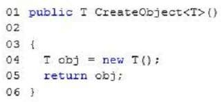

|
You are writing the following method (line numbers are included for reference only):  You need to ensure that CreateObject compiles successfully. What should you do? A. Insert the following code at line 02: where T : new() B. Replace line 01 with the following code: public void CreateObject<T>() C. Replace line 01 with the following code: public Object CreateObject<T>() D. Insert the following code at line 02: where T : Object Correct Answer: A Section: Volume B Explanation Explanation/Reference: ExplicaciónRespuesta:Mostrando de manera visual la respuesta:Fuentes: |